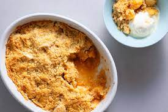

Apple Crumble

You'll love how this apple crumble isn't overly sweet, and how the filling is syrupy and jammy.
Ingredients
APPLE FILLING
- 1 kg Granny Smith apples
- 1 tbsp white flour
- 110 g white sugar
- 2 tbsp lemon juice
- 1/2 tsp ground cinammon
TOPPING
- 90 g rolled oats
- 150 g white flour
- 175 g brown sugar
- 1/2 tsp baking powder
- 1 tsp cinammon powder
- 125 g unsalted butter, melted
- pinch of salt
TO SERVE
Method
- Preheat oven to 180C.
- Peel apples, then cut into 1.5 cm cubes.
- Place apple in a bowl. Sprinkle with flour, sugar and cinammon, then pour over lemon juice. Toss, then spread out evenly in a 1.5 L baking dish.
- Place topping ingredients in a bowl. Mix until clumps form like wet sand. Spread over the apples, crumbling with fingers if required to get that crumbly topping.
- Bake for 30-40 minutes or until golden brown. Remove, cover loosely with foil to keep warm and let stand for 10 minutes before serving.
- Serve warm with vanilla ice-cream!